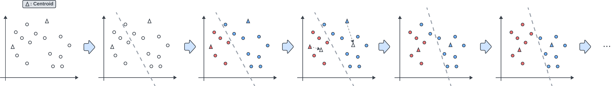
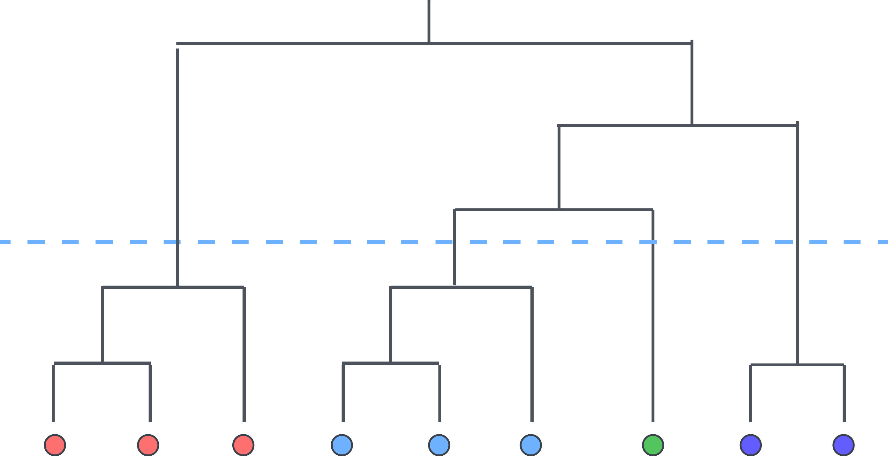
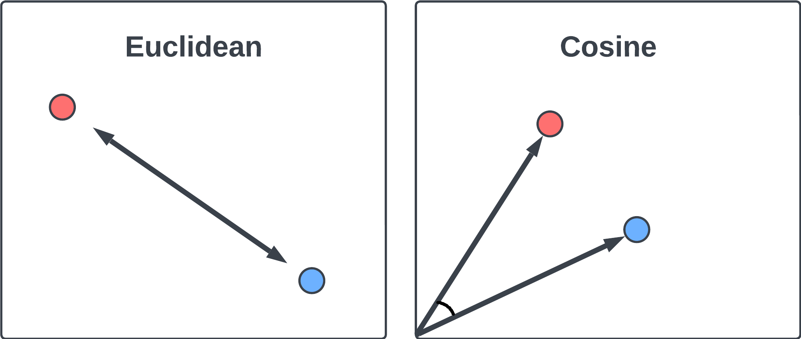

Clustering is a data analysis technique that groups data points with similar characteristics to reduce the complexity of the data and make it easier to understand. It allows for discovering and analyzing patterns, clusters, and trends within the data. We apply these clustering algorithms to a dataset of vehicle characteristics to identify distinct groups of vehicles based on their features for used cars and provide insights into the relationships between them. For example, similar used vehicles can be grouped into a cluster based on price, age, and fuel efficiency, which can be used to compare similar cars or identify vehicles in a particular segment. In this project, we will utilize two primary forms of clustering to group and analyze data points with similar vehicle characteristics: partitioned clustering, which divides data into non-overlapping clusters, and hierarchical clustering, which creates a hierarchical structure of clusters. First, this project utilizes the K-means clustering technique, which is one of the partitioned clustering techniques. K-means is one of the most widely used partitioned clustering algorithms, which divides data into K clusters. The algorithm initially sets K centroids randomly, assigns each data point to the closest centroid, and then iterates through the clustering while updating the centroids. This process is repeated until convergence, resulting in K clusters. Below is an example that outlines the procedure for K-means clustering.
Hierarchical clustering is a clustering technique that divides data into a hierarchical structure. The method starts with all data points as one cluster, and the clusters merge or split hierarchically to form a hierarchy. This hierarchical structure can be represented as a dendrogram. The generated dendrogram can be interpreted to understand the hierarchical structure between data points, clusters, and subclusters. The closer the distance between clusters, the more similar they are so that you can select clusters at any level. In the example dendrogram below, you can see four clusters in total.
Clustering is grouping similar data into the same group based on the similarity between data points. Therefore, the distance measure used to quantify and compare the similarity between data points is one of the critical factors in clustering. Since this algorithm forms clusters by calculating the distance between data points, the choice of distance measure directly affects the efficiency and performance of the clustering algorithm. In this project, we will apply two distance measures, Euclidean distance and cosine similarity, to each clustering technique.
First, K-means, a partitioned clustering, applies the Euclidean distance measure. This distance measure is one of the most commonly used distance measures, measuring the straight-line distance between data points, especially when a continuous numerical characteristic represents the data. In particular, Euclidean distance calculation can be performed very efficiently, and clustering can be performed relatively quickly even in large datasets, which makes Euclidean distance measure useful when applying K-means based on used vehicle data with large data sizes. In hierarchical clustering, the distance measure also applies cosine similarity. Cosine similarity is mainly used to measure the directional similarity between two vectors in multidimensional vector data. Cosine similarity indicates how "similar" two vectors are in direction based on the angle between them. Since cosine similarity is based on the angle between vectors, it is not affected by the size (length) of the vectors. Therefore, applying cosine similarity can be an advantage if you consider that each characteristic of a car (e.g., fuel economy, price, horsepower, etc.) may have different units and ranges. It also allows for a better understanding of the relationship between the characteristics, which is not affected by the similarity measure due to the difference in size of each characteristic and is relatively easy to interpret.
Before the application of clustering, data preprocessing is essential to enable the clustering process. Since basic data preprocessing has already been done, preprocessing related to data transformation for applying clustering is performed in this step. First, import the vehicle attributes that are numeric data types into your analysis, and if necessary, convert categorical attributes to numeric data. You can use methods such as creating dummy variables or encoding labels. Detailed procedures for data preprocessing are covered in the DATA tab. Apply clustering to group vehicles with similar characteristics into the same cluster. It allows you to perform fleet segmentation by grouping similar vehicles. For example, cars with similar fuel efficiency, price range, make, and size can be grouped into one cluster. Also, by grouping vehicles with similar price ranges, you can analyze competition between cars in your market. You can see which clusters have high price points and competitive pricing. In addition to this, customers can make detailed comparisons of different vehicles within these groups. In summary, clustering using data related to vehicle characteristics allows us to extract insights into vehicle attributes, enhance our understanding of the pre-owned vehicle market, and offer consumers improved choices and information.